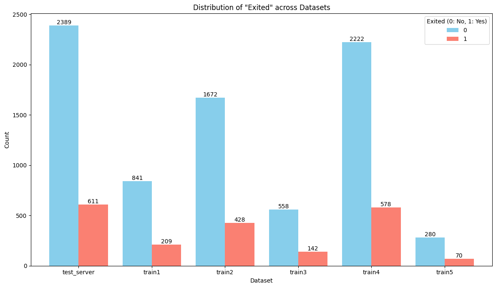
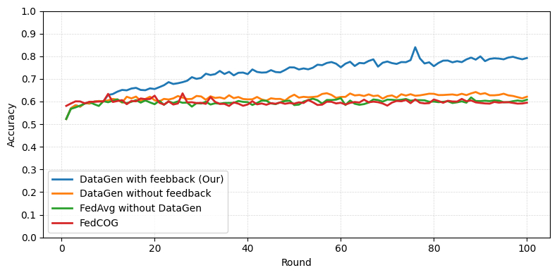

1 Trường Công nghệ Thông tin, Đại học Tân Tạo, Tây Ninh, Việt Nam
2 Viện Quốc gia về Công nghệ Thông tin và Truyền thông (NICT), Tokyo, Nhật Bản
3 Viettel Solutions, Thành phố Hồ Chí Minh, Việt Nam
Học liên kết (FL) cho phép huấn luyện mô hình cộng tác trên các máy khách phân tán mà không cần truy cập tập trung vào dữ liệu cục bộ. Tuy nhiên, phương pháp này gặp nhiều thách thức khi có dịch chuyển miền, tức khác biệt giữa phân phối dữ liệu của máy khách và môi trường triển khai có thể làm suy giảm hiệu năng mô hình.
Chúng tôi giới thiệu một khung dựa trên phản hồi để điều chỉnh miền trong bối cảnh học liên kết. Máy chủ thực hiện phân tích miền nhằm phát hiện thay đổi phân phối trong quá trình kiểm định và tạo các tín hiệu phản hồi gọn nhẹ — Grad-CAM và SHAP — làm nổi bật các mẫu đặc trưng theo miền. Những tín hiệu này được truyền tới máy khách như gợi ý điều chỉnh, giúp việc huấn luyện cục bộ có mục tiêu hơn.
Khung này cũng hỗ trợ sinh dữ liệu ở phía máy khách bằng các mô hình sinh phù hợp với từng loại dữ liệu: tự mã hóa biến phân cho dữ liệu dạng bảng, mô hình khuếch tán cho ảnh và mô hình ngôn ngữ cho văn bản. Việc kết hợp phản hồi do máy chủ dẫn dắt với điều chỉnh và tăng cường phía máy khách đem lại cải thiện ổn định so với các đường cơ sở FL tiêu chuẩn trên nhiều tác vụ và loại dữ liệu.
Máy chủ quan sát dịch chuyển miền trong quá trình kiểm định để phát hiện khác biệt giữa miền huấn luyện và miền đích.
Độ đóng góp Grad-CAM / SHAP được chuyển thành các bản tóm tắt thống kê — không bao giờ là mẫu thô — để giảm nguy cơ lộ thông tin nhạy cảm.
Phản hồi định hướng TVAE, mô hình khuếch tán hoặc LLM để mỗi máy khách tổng hợp dữ liệu hướng tới miền đích.
Thu hẹp khoảng cách nguồn–đích tạo ra mô hình toàn cục vững chắc hơn trong điều kiện non-IID.
Máy chủ giữ một tập kiểm tra đại diện cho miền đích. Các máy khách huấn luyện trên những phân mảnh cục bộ có thể khác với tập này. Mỗi chu kỳ phản hồi biến góc nhìn của máy chủ về khoảng cách đó thành một tín hiệu gọn và có thể diễn giải.
Require: {W_i}ᴺ local models; D_t test set; C clients; k, m positive integers 1: W_g ← aggregate(W_i) ▷ FedAvg or any strategy 2: if feedback generation is enabled then 3: for W_j ∈ {W_i} ∪ {W_g} do 4: prob_j ← prob(W_j(D_t)) ▷ predictions on the target set 5: end for 6: feedback ← ∅ ; F_mis ← ∅ 8: for d = (x, y) ∈ D_t do 9: W_d ← argmax { correct(W_j(x), y) ∧ biggest(prob_j(x)) } 10: h_d ← compute_heatmap(d, W_d) ▷ Grad-CAM or SHAP 11: feedback ← feedback ∪ {d : (top_k_important_feature(h_d), y)} 12: for c ∈ C do 13: if pred_c(x) ≠ y then 14: F_mis[c] ← F_mis[c] ∪ {d : prob_c(d)} 15: end if 16: end for 17: end for 18: for c ∈ C do 19: sort F_mis[c] by prediction probability, descending 20: keep the top_m entries → F_mis,top_m[c] 21: send feedback[ F_mis,top_m[c].keys() ] to client c 22: end for 23: end if 24: send W_g to all clients
Require: G generative model; F feedback; D_local client data; N samples to generate 1: D_g ← ∅ 2: D_aug ← D_local 3: while len(D_g) < N do 4: for (x̄, p, y) ∈ F do ▷ x̄: top-k features, p: positions, y: label 5: initialize a noisy input x̂ 6: overwrite features x̄ into x̂ at position p 7: add G(x̂, y) to D_g 8: end for 9: end while 10: D_aug ← D_aug ∪ D_g 11: train the local model on D_aug ▷ real + synthetic
Trong mọi thí nghiệm, Flower là khung FL và FedAvg là quy tắc tổng hợp.
10.000 khách hàng, 18 đặc trưng, khoảng 80% không rời bỏ dịch vụ. Phần huấn luyện 70% được chia thành 5 phân mảnh máy khách non-IID; máy chủ giữ 30% phần kiểm tra làm miền đích. SHAP dẫn dắt phản hồi; TVAE được huấn luyện trước trên toàn bộ tập dữ liệu sẽ sinh các hàng tổng hợp. 30 vòng.
| Phương pháp | Độ chính xác | Độ chính xác dương tính | Độ bao phủ | Điểm F1 |
|---|---|---|---|---|
| Sinh dữ liệu kèm phản hồi | 0.9280 | 0.7770 | 0.9067 | 0.8369 |
| FedAvg không sinh dữ liệu | 0.8320 | 0.6072 | 0.4959 | 0.5459 |
| Sinh dữ liệu không phản hồi | 0.8243 | 0.5802 | 0.4975 | 0.5357 |
| Huấn luyện tập trung | 0.8433 | 0.4484 | 0.6732 | 0.5383 |

Bộ phân loại ResNet-18, mô hình khuếch tán được huấn luyện trước trên toàn bộ 60.000 ảnh, dữ liệu được chia thành 10 tập con non-IID với một tập được giữ lại làm tập đích. Grad-CAM cung cấp phản hồi. Sau 50 vòng giao tiếp, phương pháp của chúng tôi dẫn đầu trên cả ba tập đích — vượt FedCOG, sinh dữ liệu không phản hồi và FedAvg.
DistilBERT được tinh chỉnh trên hơn 200.000 tiêu đề thuộc 42 nhóm, chia thành 6 tập con non-IID (Dirichlet, β = 0.05; năm máy khách cùng tập kiểm tra của máy chủ). Phản hồi token từ Grad-CAM dẫn dắt việc sinh tiêu đề dựa trên Gemma.

Huấn luyện khởi đầu như FL thông thường và bật phản hồi khi độ chính xác giảm giữa các vòng liên tiếp. Máy chủ sau đó chọn một tập con nhỏ các máy khách — thường là ba máy có độ chính xác thấp nhất — và đánh dấu một vài lớp có lỗi cao cho mỗi máy.
Kho mã này có hai triển khai có thể chạy, mỗi triển khai đi kèm các phân mảnh dữ liệu, yêu cầu và README riêng.
tabular/ (SHAP + TVAE) và text/ (Grad-CAM + Gemma) được đưa vào đây. Thí nghiệm CIFAR-10 / khuếch tán ở Mục 3.2 của bài báo không thuộc kho mã này.# Python 3.8–3.11 (torch 2.2.2 has no 3.12 wheel) cd tabular conda create -n flgenai-tabular python=3.10 -y && conda activate flgenai-tabular pip install -r requirements.txt # terminal 1 — server, listens on 0.0.0.0:9000 python server_tabular.py # terminal 2..n — one process per client shard python client_tabular.py --client-id client1 --train-csv dataset/7030/train1.csv \ --server-address 127.0.0.1:9000 --log-dir logs/exp01
plateau_window, plateau_delta) sau min_feedback_round; các đặc trưng thấp hơn shap_threshold được che thành NaN trước khi gửi.cosine_sim_threshold.reference, dùng để điền các giá trị bị che. Không có dữ liệu máy khách nào được chia sẻ — nhưng cách này vượt ra ngoài mô tả chỉ dùng bản tóm tắt trong bài báo, vì vậy cần xem xét trước khi triển khai với dữ liệu đích nhạy cảm.--log-dir: chỉ số theo vòng, thời gian, JSON phản hồi và nhật ký máy khách.cd text pip install -r requirements.txt # server — Grad-CAM feedback on plateau / overfitting python server_textdata.py --num_rounds 30 --ckpt_every 5 # client — DistilBERT training + Gemma-2B generation python client_textdata.py
TEST_CSV ở máy chủ, CSV_PATH và DRIVE_ROOT ở máy khách — rồi cung cấp token Hugging Face của riêng bạn vì Gemma yêu cầu token này.beginning, middle hoặc end.USE_GRADCAM_FEEDBACK = False tái tạo đường cơ sở sinh dữ liệu không phản hồi.| Phân mảnh | Dạng bảng (hàng) | Văn bản (hàng) |
|---|---|---|
| Tập kiểm tra máy chủ | 3,000 | 10,979 |
| Máy khách 1 | 1,050 | 48,740 |
| Máy khách 2 | 2,100 | 69,641 |
| Máy khách 3 | 700 | 31,426 |
| Máy khách 4 | 2,800 | 28,196 |
| Máy khách 5 | 350 | 20,517 |
Exited); mỗi phân mảnh văn bản chứa 42 nhóm tin tức với một tập trội khác nhau.@inproceedings{vu2026domain,
author = {Vu, Phuong-Anh and Phan, Kim-Tinh and Nguyen, Cao-Dien and
Cao, Tien-Dung and Phong, Le Trieu and Nguyen, Ngoc-Thai},
title = {Domain Adaptation of Federated Learning by Data Generation
and Server Feedback},
booktitle = {Multi-disciplinary International Conference on Artificial
Intelligence (MIWAI 2025)},
series = {Lecture Notes in Artificial Intelligence},
volume = {16354},
pages = {272--283},
publisher = {Springer Nature Singapore},
year = {2026},
doi = {10.1007/978-981-95-4960-3_22}
}
Nghiên cứu này được Quỹ Phát triển Khoa học và Công nghệ của Đại học Tân Tạo (TTU) hỗ trợ theo mã tài trợ TTU.RS.25.102.003. Công trình của L. T. Phong được JST CREST, Nhật Bản hỗ trợ một phần theo mã JPMJCR21M1.